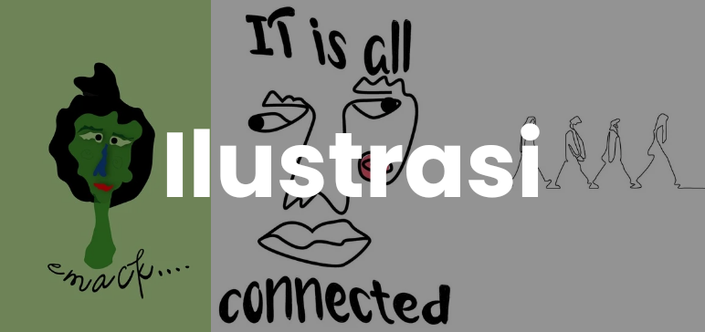
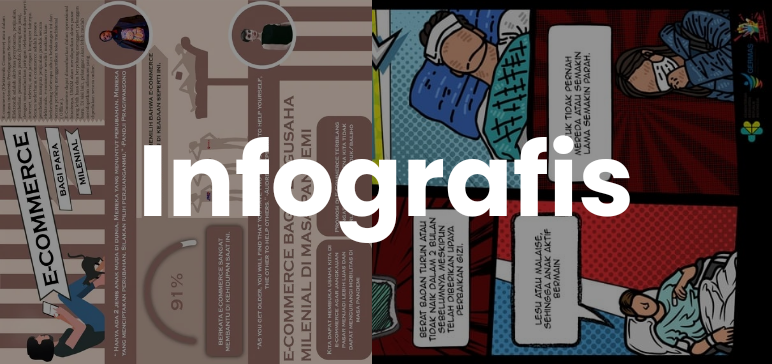

My Project

Blogspot OSIS
Blogspot resmi yang saya desain saat saya menjabat sebagai anggota OSIS pada tahun 2021.
Dokumentasi
Feeds Instagram
Desain feeds instagram yang saya desain saat saya memegang tanggung jawab sebagai media kreatif.
Dokumentasi
Poster Event
Desain poster event yang saya desain pada saat saya menjadi bagian dari divisi media kreatif diberbagai event
Dokumentasi

Ilustrasi
Desain ilustrasi yang saya desain untuk mengisi waktu luang menggunakan Adobe Illustrator
Dokumentasi

Infografis
Desain infografis yang saya desain saat saya mengikuti perlombaan disebuah institusi
Dokumentasi
Karya Tulis Ilmiah
Karya Tulis Ilmiah yang saya tulis saat saya mengikuti perlombaan disebuah institusi
Dokumentasi